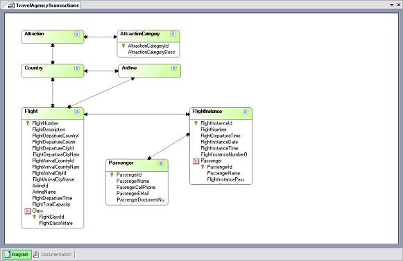

Display all relations between the selected transactions. Each transaction within the diagram is represented by a rectangle and arrows are used to indicate relations. Only direct relations are represented. DescriptionLet us suppose that we have an invoicing model consisting of the following transactions: Clients, Invoices and Products. The type of arrows used are: The Delete button removes the Transaction from the diagram (attention: only Transaction Diagrams are deleted, not the Knowledge Base). To edit a transaction displayed on the diagram you must Double-click over it.  See Also |
| Backlinks | |
| Category:Diagram object | Diagrams |
| Table Diagrams |